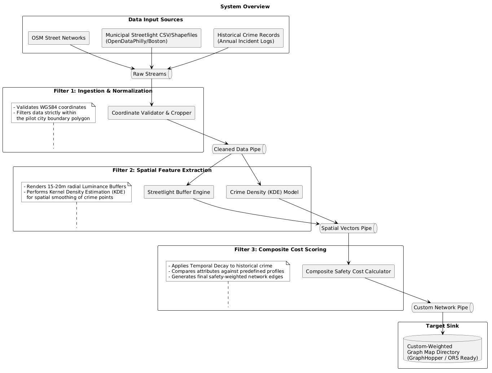
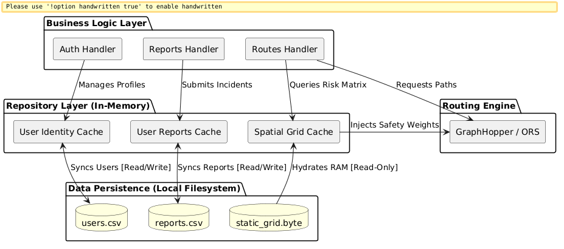
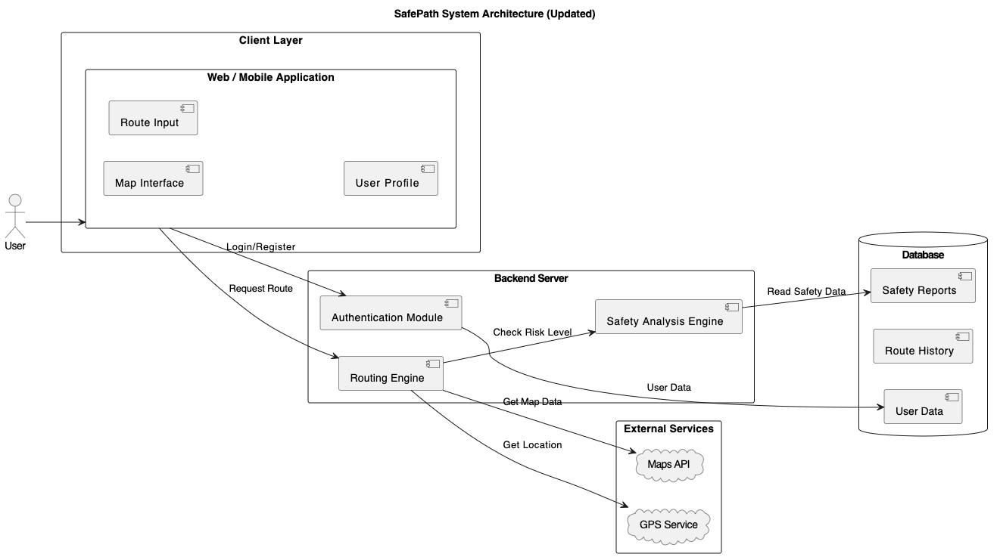

System Architecture Diagrams
High-level architectural overviews illustrating the structure and data flow of the SafePath system.

System Overview
The system integrates OpenStreetMap road networks, municipal streetlight data, and historical crime records, then validates and normalises them to produce clean spatial datasets. These datasets are processed through spatial feature extraction and composite safety cost scoring, generating a custom-weighted road network that can be used by routing engines such as GraphHopper or ORS to recommend safer travel routes.

Repository Structure
An overview of the SafePath repository layout, detailing how the codebase is organized across the frontend, backend, and data processing modules.

System Architecture
The updated system is a clean, three-tier architecture (Client, Backend, and External Services/Database) focused entirely on secure user management and safe route planning. By removing the emergency response infrastructure and the weather data dependencies, the system shifts its core focus strictly to proactive route safety analysis based on historical and static safety reports.
Client Layer (The User Experience)
The user interacts entirely with the Web / Mobile Application.
- User Profile & Auth: The user logs in or registers, which securely communicates with the backend.
- Navigation UI: The user enters their destination via the Route Input and views the final, calculated safe path on the Map Interface.
Backend Server (The Core Logic)
The backend acts as the brain of the application, processing requests and evaluating data:
- Authentication Module: Handles credential validation and manages user profiles by reading/writing to the database.
- Routing Engine: The central orchestrator for navigation. When a user requests a path, this engine fetches real-time coordinates from the GPS Service and map geometry from the Maps API.
- Safety Analysis Engine: Before a route is finalized, the Routing Engine asks this engine to "Check Risk Level." It queries the database's Safety Reports to evaluate if a path has known hazards or high-risk histories, ensuring the user is routed away from trouble.
Data & External Integration Layer
- External Services: The system relies on third-party Maps APIs and GPS Services to handle location tracking and baseline mapping functionality.
- Database: Keeps track of persistent data split into three clean categories: User Data (profiles/credentials), Route History (past trips), and Safety Reports (crowdsourced or curated data used to evaluate route safety).